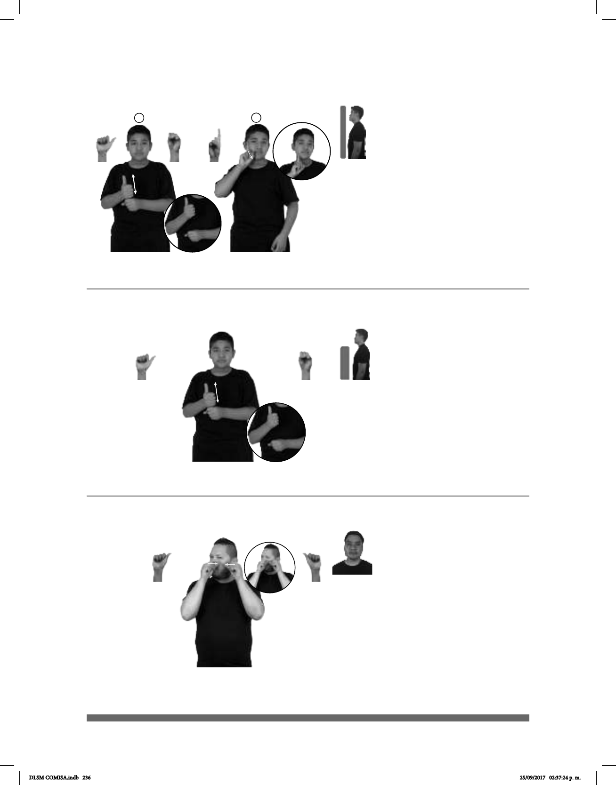

236
1
2
(A-10)
pos-MÍ ABUELO+MUJER 90 EDAD
Mi abuela tiene 90 años.
(A-12)
(A-11)
pro-YO EXPRIMIR-BARRO
Me estoy exprimiendo un barro.
pos-MÍ ABUELO 90 EDAD
Mi abuelo tiene 90 años.
Seña: SB
MD A.1, MB S.1
MD y MB palmas hacia
adentro.
A la altura del pecho. MD
sobre MB.
La MD golpea a la MB
en línea recta repetidamente.
sust. m. En relación con
una persona el padre de su padre
(abuelo paterno), o de su madre (abuelo
materno).
Seña: SC: I. SB; II. SM
I. MD A.1, MB S.1;
II. D.4
I. MD y MB palmas
hacia adentro; II. Palma hacia afuera.
I. A la altura del pecho. MD
sobre MB; II. Sobre la mejilla y se
desliza hacia la barbilla.
I. La MD golpea a la MB
en línea recta repetidamente; II. Recto.
sust. f. En relación con una
persona la madre de su padre (abuela
paterna), o de su madre (abuela
materna).
Seña: SS
A.2
Las palmas se encuentran
frente a frente.
Sobre la mejilla, de los lados al
centro.
Recto.
Rotación de cabeza
hacia la derecha, ojos semicerrados.
Simula la acción de
exprimir un barro o una espinilla.
sust. m. Grano que brota en la
piel por acumulación de grasa o de sustan-
cias no aprovechadas por el organismo.
DLSM COMISA.indb 236 25/09/2017 02:37:24 p. m.